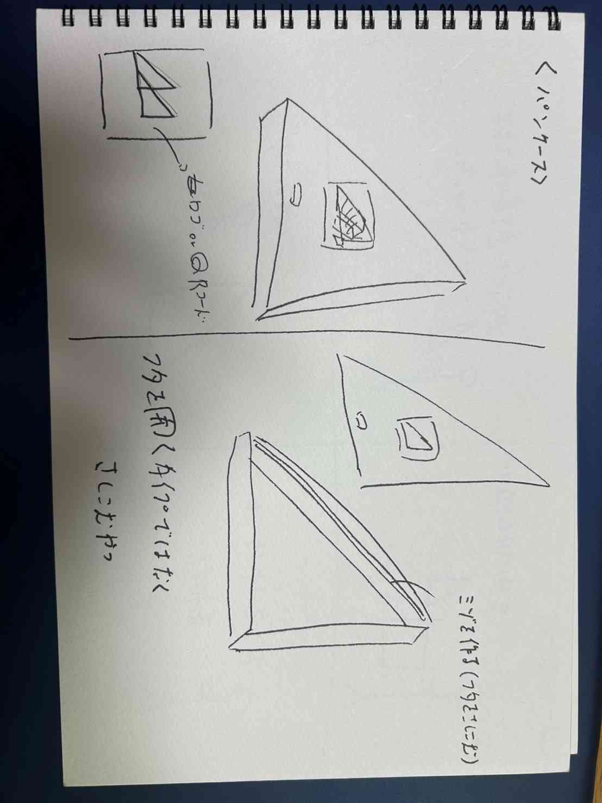
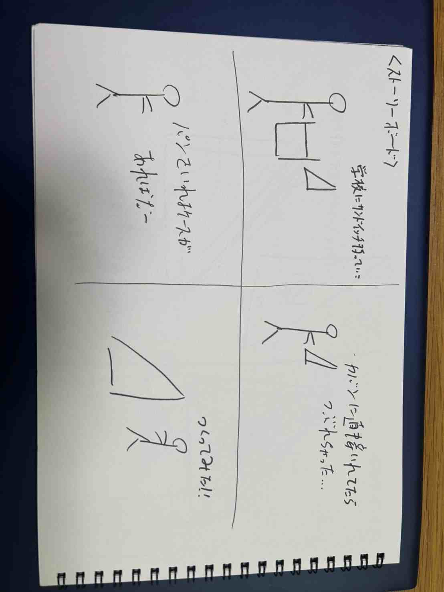
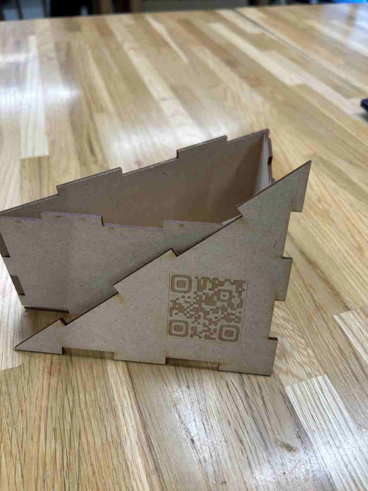
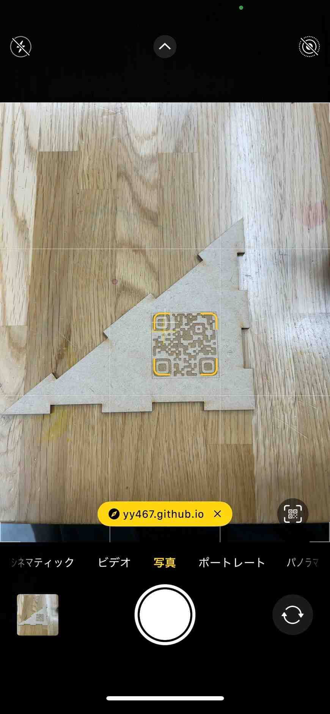
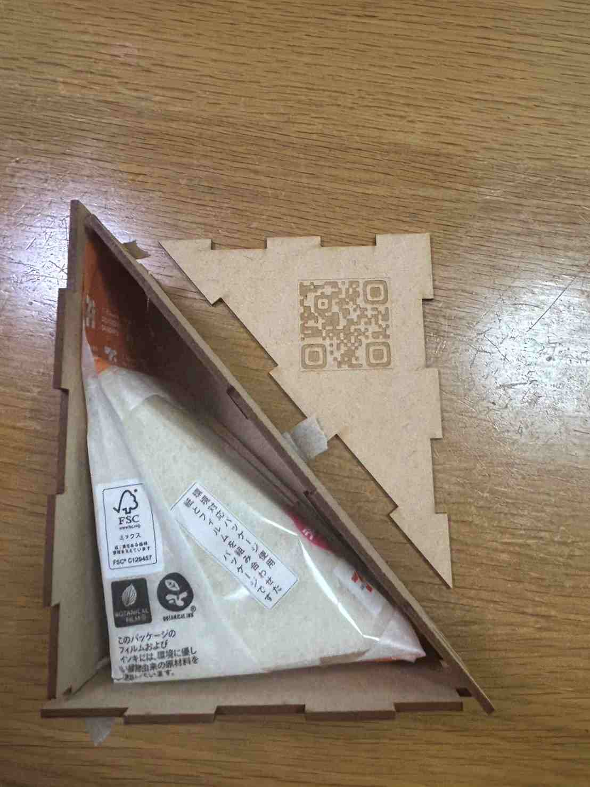

レーザーカッティング
[サンドイッチボックス]
【スケッチ＆ストーリーボード】


[aiファイル][dxf ファイル]
[作品の説明]
これを作ろうとしたきっかけは、自分自身かばんにパン（特にサンドイッチ）を入れて持っていくことが多くあり
そののままの状態でかばんに入れていたが、たべる頃にはぺちゃんこにつぶれてしまうことが多かったのでこのような
ハードケースを作った。同じ体験をしたことがある人の心を動かすことができると思い制作した。
先輩の作品の中にQRコードを使ったアイテムを見つけ自分の作品にも取り入れたいと思い蓋のところにつけてみた。
ここでは、自分のXBPのサイトのURLをQRにして張ってみたが、これがもしもパン屋さんだったらサンドイッチと
一緒にこのケースをつけることで、サンドイッチが崩れないだけでなく、上のQRにお店のメニューを張ることで
普段なかなか全部見れないパン屋さんのメニューを一望できれば面白いと思いQRをつけてみた。
【制作の中の気づき】
三角形の形をした箱を作ろうと思ったときに本当は、maker caseを使って作ろうとしたが自分の思っている形が正三角形ではなく
直角三角形だったため、正三角形しか作れないmaker caseでは自分の思った形が作れず、Fusionを使いスケッチを作成した。
実際に入れてみた

試しにセブンイレブンのサンドイッチを入れてみたら想像してた東リのできで満足しました。